General Discussion of the Algorithm
The aim of the algorithm described in the paper is to solve the measure and contour problem for a set of Iso-Rectangles using Divide and Conquer technique.
Usually the sweep line technique was used for this but Guting aimed to achieve O(NlogN) time complexity using divide and conquer. The idea is to use seperational
representations.We divide the 2-D plane into a set of horizontal stripes and in each divide step, we break this plane into half.For the conquer step, we merge
the 2 sets of stripes by using different functions such as copy, blacken and conact. Finally after the construction of these stripes, from the union of intersecting
intervals, we find the contour lines and the measure of the rectangles.
Input
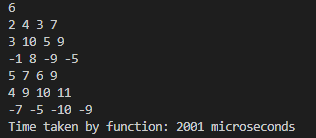
Output
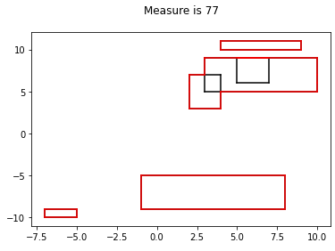
Input
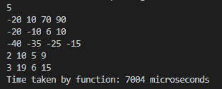
Output
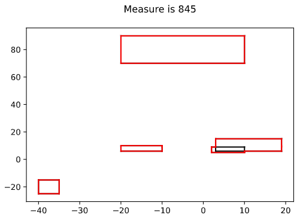
Input
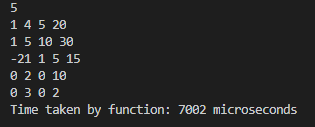
Output
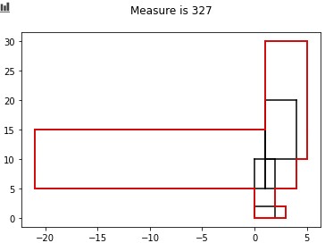
Input

Output
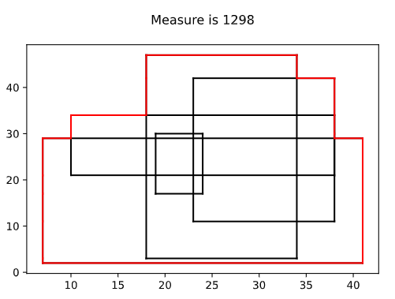
Input
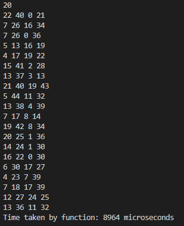
Output

Input
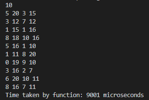
Output
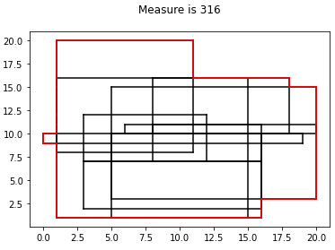
Issues in Coding
The research paper was a little difficult to interpret sometimes as it was written in 1984 and somethings were kept very obtuse. Another issue faced was handling segmentation faults
and memory allocations. Also implementing the different custom data types was also difficult and required keen attention. Another issue faced was handling the case of same x and y coordinates
for 2 rectangles as this is handled at the end of the paper and only in a text manner without much pseudo code
Timing Analysis for different number of rectangles
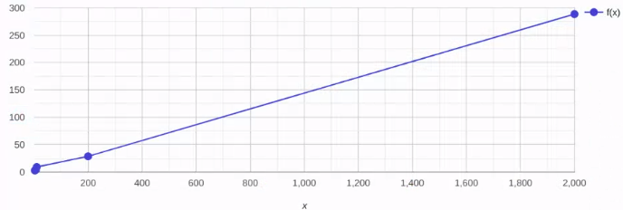
References
“Optimal Divide-and-Conquer to Compute Measure and Contour for a Set of Iso-Rectangles” by Ralf Hartmut Guting